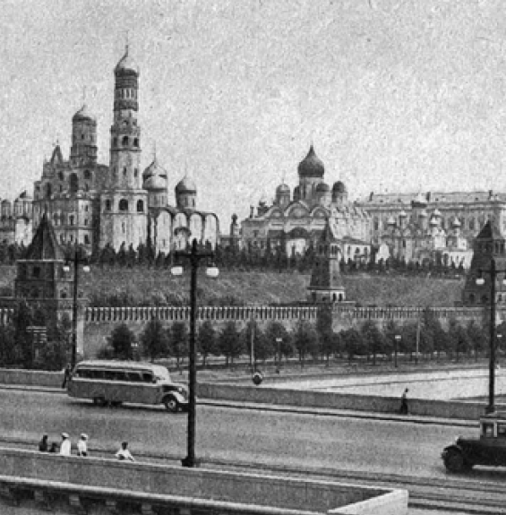

Советская архитектура за тридцатилетний творческий период накопила огромный опыт, добилась немалых успехов, стала одной из важнейших отраслей социалистической культуры. Из частного дела небольшого круга отдельных лиц, несплоченных и действовавших каждый по своему усмотрению, за свой страх и риск, архитектура в Советской стране стала большим всенародным делом, в успехах которого заинтересованы широчайшие массы.
Читать подробнее